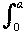
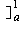
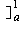

|f (x) - g(x)| dx ≤ d∞(f, g) dx = (b - a)d∞(f, g).
|f (x) - g(x)| dx ≤ d∞(f, g) dx = (b - a)d∞(f, g).So if we have d∞(fn, f) < ε for large n, we have d1(fn, f) ≤ (b - a)ε which is small for n large and so (fn)→ f in d1 also.
In fact if (fn)→ f in d∞ it also converges in d2 though the inequality is a bit trickier.

Measure distance around the equator and scale it to fit into [0, 1]. Note that 0 and 1 represent the same point. Then assuming that temperature varies continuously, you can use the last result to deduce that two opposite points have the same temperature.
Assume that m < n and put |a1 - a2| = R. Then |a2 - a3| = |f (a1) - f (a2)| ≤ λR, and so on.
In general |am - am+1| ≤ λm-1R and |am - an| ≤ (λm-1 + λm + ... + λn)R.
Since the Geometric series
 λn is convergent, its partial sums form a Cauchy sequence and so the above expression can be made as small as we like by choosing m, n large. Thus (an) is a Cauchy sequence and hence has a limit α. By the usual argument α satisfies the equation f (α) = α and so is a fixed point for f.
λn is convergent, its partial sums form a Cauchy sequence and so the above expression can be made as small as we like by choosing m, n large. Thus (an) is a Cauchy sequence and hence has a limit α. By the usual argument α satisfies the equation f (α) = α and so is a fixed point for f.If β is another fixed point then f (α) - f (β) = α - β and since we have |f (α) - f (β)| <
 |α - β| this is impossible unless α = β. Thus the fixed point is unique.
|α - β| this is impossible unless α = β. Thus the fixed point is unique.
 The line y = ax meets y = x2 where ax = x2 ⇒ at P we have x = a.
The line y = ax meets y = x2 where ax = x2 ⇒ at P we have x = a.Then d1(ax, x2) =  (ax - x2) dx +
 (x2 - ax) dx = [ax2/2 - x3/3 + [x3/3 - ax2/2 = a3/3 - a/2 + 1/3.
(x2 - ax) dx = [ax2/2 - x3/3 + [x3/3 - ax2/2 = a3/3 - a/2 + 1/3. Differentiate to find the minimum of this.
This occurs when a2 - 1/2= 0 or at a = 1/√2 = 0.707 (approximately).
 To find the length of the "Left-hand thick line" where the distance between the graphs is a maximum, differentiate: d/dx(ax - x2) = 0 ⇒ a = 2x ⇒ x = a/2.
To find the length of the "Left-hand thick line" where the distance between the graphs is a maximum, differentiate: d/dx(ax - x2) = 0 ⇒ a = 2x ⇒ x = a/2.So the length of the "Left-hand thick line" a2/2 - a2/4 = a2/4.
The length of the "right-hand thick line" is 1 - a and so if these two lengths are the same we have a2/4 = 1 - a ⇒ a = √8 - 2 = 0.828 (approximately).
[d2(x2, ax)]2 =
 (x2 - ax)2 dx = [x5/5 - ax4/2 + a2x3/3
(x2 - ax)2 dx = [x5/5 - ax4/2 + a2x3/3 = a2/3 - a/2 + 1/5
= a2/3 - a/2 + 1/5and we can differentiate to find where this is a minimum ⇒ 2a/3 - 1/2 = 0 ⇒ a = 3/4 = 0.75